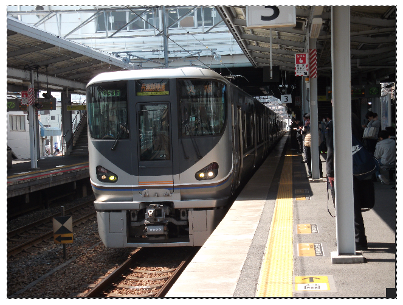
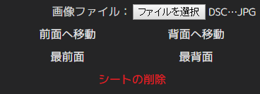

ヘルプ目次へ
画像シートについて

画像シートは、様々な画像を配置するためのシートです。
設定項目の説明

画像ファイル
画像ファイルを選択します。
読み込まれた画像は、自動で最大640pxに縮小されます。
対応形式は、PNG・JPG・BMP・GIF・ICOです。
透明度 (「画像の加工」フォルダ )
1.0.1 Stableから追加された機能です。
シートの透明度を設定します。0(透明)～1(不透明)の範囲で設定します。
前面へ移動・背面へ移動・最前面・最背面 (「画像の配置」フォルダ )
画像と文字を重ねる時など、重なりの順序を変更する時にご利用下さい。
シートの削除 (「画像の配置」フォルダ )
選択中の画像シートを削除します。